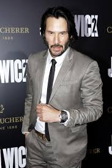

Jardani JovonovichUnder the supervision of The Director, Jardani developed multiple martial arts skills.
At some point, Jardani took the name "John Wick" and left the Ruska Roma. As John Wick, he left to serve
in the United States Marine Corps 2nd Battalion, 3rd Marine as evidenced by his tattoos. After leaving
the Marine Corps, John joined The Continental and became a professional hitman. He became a feared and
ruthless hitman his targets would call "Baba Yaga". John's skills were so intense there is a legend that
he once killed 3 men in a bar with a single pencil. Eventually, John met a woman named Helen and fell in
love. Hoping to leave his past as a hitman behind and pursue a normal life, John met with Viggo Tarasov
who had one requirement to allow him to leave: assassinate all his rivals in one night.